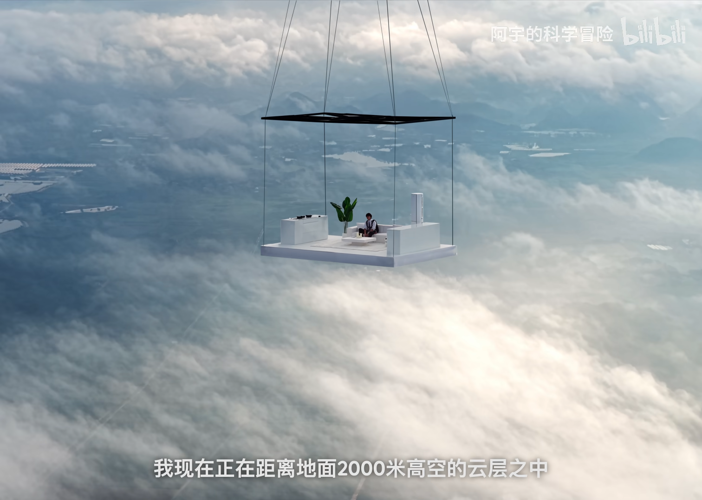

以内容为杠杆，
走进真实的兴趣，与创作者一起，
从认真钻研，到灵感大开。
公开内容仅作视觉示意，不代表花火商业合作案例；点击封面可前往原视频。
破圈共创 跨圈层连接多元兴趣，以内容共创拓展品牌触点。
生态普惠 让多元创作者被看见，以真实表达连接细分人群。
深度定制 让品牌诉求融入创作，找到用户愿意观看的表达。
心智深耕 让优质内容持续沉淀，将品牌认知积累为内容资产。
提供订单前、中、后全流程一站式服务。
找到适合品牌的创作者 AI托管、服务商协作、产品自助与节点活动，让不同合作需求找到合适的起点。
让共创有序发生 从需求沟通到内容交付，通过纠纷自助解决、稿件保护和风险管理，支持合作稳步推进。
让每一次合作有所积累 通过MATES人群资产模型，连接投前策略、投放监测和投后度量，理解内容与人群的关系。
合作案例
让每一次观看， 从创意到内容，从观看到共鸣。

案例视觉示意 · 正式案例内容待补充
合作指南
每一种角色，
选择你的角色，了解开始合作前的常见问题。
代理商↗
MCN / 直播工会↗
服务商↗
UP 主↗
合作前需要准备哪些信息？ 建议先整理品牌目标、目标人群、预算范围、产品信息和期望上线时间，并说明本次合作更关注新品认知、产品理解，还是长期品牌内容积累。若已有参考作品，可以一并标注喜欢的表达方式、必须传达的信息和需要避开的内容。随后明确内部决策人与反馈节奏，便于与合作方讨论选人方向、创作空间和交付安排。涉及主体资料、准入条件及订单要求时，请以实际页面提示和双方确认的合作约定为准。
如何选择适合项目的选人方式？ 可以先结合团队投入、项目复杂度和协作习惯，判断需要更多选人辅助，还是希望自行筛选并推进合作。希望借助智能工具梳理方向时，可了解 AI 智能托管式选人；需要外部团队协同时，可了解委托服务商协作模式。若团队已有明确标准，可进一步了解产品自主化模式；围绕特定营销节点或内容主题，也可关注平台节点活动与 IP 合作。确定方式前，建议逐项核对服务内容、分工、预算和交付边界。
投放后可以了解哪些结果？ 建议从合作前确定的目标出发，把内容表现、用户反馈和品牌资产放在一起观察，避免只用某一个数字判断效果。可结合实际可见的播放、互动及评论反馈，了解用户是否注意到核心信息、对产品有哪些疑问，以及哪些表达更容易引发讨论。平台提供的 metes 人群资产模型，也可作为理解品牌内容积累的参考。具体可查看的指标、统计周期与权限以实际页面为准，复盘时还应结合内容题材、发布时间和合作背景。
机构如何了解合作与入驻要求？ 机构可先梳理自身业务类型、主体信息、所服务账号及合作需求，确认希望参与的是商务对接、内容协作，还是其他合作环节。涉及 UP 主或其他账号时，建议提前核实授权范围，并指定能够统一沟通的负责人。随后通过平台实际展示的入口或咨询渠道，了解对应机构类型的资料要求与办理步骤。不同业务可能适用不同条件，提交资料前应逐项核对页面说明，不将其他机构的合作经验直接视为自身适用的准入规则。
机构与 UP 主之间如何分工协作？ 建议在项目开始前明确机构、UP 主和品牌各自负责的事项，并约定商务沟通、需求确认、内容制作与交付验收的主要联系人。机构可以协助整理信息和协调节奏，创作者则应充分参与内容方向与表达方式的讨论，避免需求在多次转述中失真。涉及账号操作或代为确认时，需先核实授权范围和实际可用权限。重要结论尽量形成可追溯的记录，遇到档期、创意或交付范围变化时，也应及时同步相关方并重新确认安排。
合作发生分歧时如何处理？ 发生分歧时，建议先回到已经确认的需求、交付标准和时间安排，区分是信息理解不同、需求发生变化，还是实际执行偏离约定。整理需求确认、版本修改、交付与反馈记录，并向相关方说明争议事项、已有共识和希望达成的处理结果。能够协商解决的部分，可先形成明确的后续安排；需要平台协助时，再核对纠纷自助解决等渠道的适用条件与材料要求。处理范围、操作步骤和最终结果应以实际规则及处理情况为准。
如何参与花火项目协作？ 服务商可先整理自身擅长的行业、服务能力、团队配置和代表性项目，明确能够承担的工作环节与资源边界。围绕委托服务商协作模式，进一步了解项目需求、品牌预期以及与 UP 主的协作方式，再判断团队是否具备相应的交付能力。接洽时建议主动说明项目负责人、沟通机制、计划周期和报价范围，便于双方评估合作匹配度。具体准入条件、可承接范围和参与入口，应通过平台实际页面或官方咨询渠道确认。
项目开始前需要确认什么？ 项目开始前，建议将目标、目标人群、服务范围、交付物和关键节点整理为双方都能核对的合作说明，明确哪些事项包含在服务内，哪些需要额外协商。内容制作还应确认品牌必须传达的信息、素材使用范围、反馈人和验收方式，为创作保留合理空间。若涉及多方协作，需要同步各自职责与沟通路径，避免重复反馈或无人决策。预算、变更处理和其他履约安排也应提前形成共识，并以正式合作约定及平台适用要求为准。
如何保障项目按约定推进？ 建议把项目拆分为需求确认、创意讨论、内容制作和交付验收等阶段，为每个阶段明确负责人、预期产出及反馈时间。推进过程中及时记录已确认的版本，发现档期、预算或交付范围变化时，先同步影响，再协商调整计划，避免信息滞后累积为争议。平台提供纠纷自助解决、稿件保护与风险管理等能力，可结合项目实际情况了解和使用。各项能力的适用条件与处理边界应以实际规则为准，不能替代合作各方对需求和履约事项的确认。
如何开始与品牌合作？ 建议先准备能够体现个人内容风格、受众特点和创作能力的代表作品，并梳理自己熟悉的行业、感兴趣的品牌及可安排的合作档期。接到合作需求后，先了解产品信息、品牌目标和交付预期，判断是否适合自己的表达方式与受众需求。沟通过程中可主动说明创意方向、制作条件及需要品牌配合的资料，再讨论预算、时间和修改安排。账号参与条件与具体操作入口以平台实际页面为准，确认合作前也应认真阅读相关约定。
如何让品牌诉求与个人风格兼容？ 可以先与品牌对齐必须传达的核心信息、需要准确表述的产品事实，以及内容中需要注意的边界，再从受众熟悉的题材和叙事方式出发寻找创意。相比直接堆叠卖点，更适合讨论这些信息如何融入真实体验、故事或知识分享，让表达保持连贯。制作前可用大纲或创意说明确认方向，并提前约定反馈人、修改范围和交付节点。若品牌诉求与个人风格存在冲突，应尽早说明原因并提出可行方案，涉及审核和修改的具体安排以双方约定为准。
稿件保护涵盖哪些内容？ 稿件保护是平台提供的合作相关能力之一，建议在使用前先了解当前规则中的保护对象、适用情形和处理范围，判断自己的具体问题是否适用。创作与沟通过程中，可以妥善保留原始稿件、提交时间、版本变化和双方确认记录，便于出现分歧时准确说明情况。需要寻求协助时，尽量清晰描述涉及的稿件、争议事项与期望处理结果，并按实际入口要求准备材料。是否受理、如何处理及相关时限，应以平台届时公布的规则和实际处理结果为准。